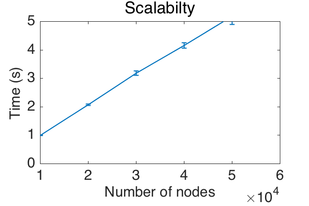

 
<!DOCTYPE html>
<html lang="en">
<head class="include" file="../include/header.html">
<link rel="stylesheet" href="../include/bootstrap.min.css">
<link rel="stylesheet" href="../include/bootstrap-theme.min.css">
<link rel="stylesheet" href="../include/bootstrap-select.min.css">
<link rel="stylesheet" href="../include/style.css" type="text/css">
<link rel="stylesheet" href="../include/highlight.css" type="text/css">
<meta charset="utf-8">
<meta http-equiv="X-UA-Compatible" content="IE=edge">
<meta name="viewport" content="width=device-width, initial-scale=1">
<meta NAME="keywords" CONTENT="reproducible, research, platform, rrp, rr, reproducible research, reproducible research platform, matlab, code, mat2doc, science, knowledge"/>

<title>ESTIMATION_PSD_SCALABILITY - Study the scalability of the PSD estimation method</title>
</head>


<!-- body must stay hidden until all include parts are loaded -->
<body style="display:none;">
<!-- Wrap the content into responsive container -->
<div class="container">
<!-- Include main navigation -->
    <div class="masthead include" file="../include/mainnav.html"></div>
        <div class="row">
            <div class="col-md-2" id="codeswitch"><div id="menutitle"><a href="estimation_psd_scalability_code.html">View the code</a></div>
</div>
            <div class="btn btn-large btn-success span22-doc">
                <a style="color: #FFFFFF" href="../archive/#PACKAGE#.zip">Download <font color="red">r<sup>2</sup>&pi;</font> archive for windows</a>
                <a style="color: #FFFFFF" href="../archive/#PACKAGE#.tgz"> or for unix </a> 
            </div>
        </div>
        <div class="row">
            <div class="col-md-2">
                <div class="include" file='contentsmenu.html'></div>
                <br/>
                <div id="seealso"><p></p></div>
                <br/>
            </div>
            <div class="col-md-10">
           
                    <h1 class="title">ESTIMATION_PSD_SCALABILITY - Study the scalability of the PSD estimation method</h1>

<div class="section" id="xxxdescription">
<h2>Description</h2>
<p>Authors: Nathanael Perraudin and Pierre Vandergheynst</p>
<p>Date: January 2016</p>
<p>Paper: Stationary signal processing on graphs</p>
</div>
<div class="section" id="abstract-of-the-paper">
<h2>Abstract of the paper</h2>
<p>Graphs are a central tool in machine learning and information
processing as they allow to conveniently capture the structure of
complex datasets. In this context, it is of high importance to develop
flexible models of signals defined over graphs or networks. In this
paper, we generalize the traditional concept of wide sense stationarity
to signals defined over the vertices of arbitrary weighted undirected
graphs. We show that stationarity is intimately linked to statistical
invariance under a localization operator reminiscent of translation. We
prove that stationary signals are characterized by a well-defined Power
Spectral Density that can be efficiently estimated even for large
graphs. We leverage this new concept to derive Wiener-type estimation
procedures of noisy and partially observed signals and illustrate the
performance of this new model for denoising and regression.</p>
</div>
<div class="section" id="this-experiment">
<h2>This experiment</h2>
<p>Figure 1 shows the time of PSD-estimation algorithm with respect of the
number of node. We use a <span class="math">\(10\)</span>-nearest neighbors graph (sensor type) and
only <span class="math">\(1\)</span> signal with <span class="math">\(M=30\)</span> filters. For this experiment <span class="math">\(K_2\)</span> is set
to <span class="math">\(10\)</span> and the Chebysheff polynomial order is <span class="math">\(30\)</span>. We average the
result over <span class="math">\(10\)</span> experiments.</p>
<div class="figure align-center">

<p class="caption">Results</p>
<div class="legend">
Computation time versus size of the graph. We use <span class="math">\(M=30\)</span> filters.
The algorithm scales linearly with the number of edges</div>
</div>
</div>
<div class="section" id="complexity-analysis">
<h2>Complexity analysis</h2>
<p>This method shows itself to be very powerful when the number of nodes
<span class="math">\(N\)</span> is greater than a few thousands. Diagonalizing the Laplacian
requires <span class="math">\(\mathcal{O}(N^3)\)</span> operations, while for a fixed error, the
approximation scales with the number of edges of the graph:
<span class="math">\(\mathcal{O}(|E|)\)</span>, (which is proportional to <span class="math">\(N\)</span> in many graphs). In
fact, this estimation necessitates :math:` (K + K_2) M ` filtering operations
(with <span class="math">\(M\)</span> the number of points where the PSD). The final computation
cost of the method is thus <span class="math">\(\mathcal{O}\left((K + K_2) M |E|\right)\)</span>.</p>
<p><em>This code produces the following output</em>:</p>
<pre class="literal-block">
PSD estimation for N = 10000  :  1.138986 s
PSD estimation for N = 20000  :  2.346258 s
PSD estimation for N = 30000  :  3.456095 s
PSD estimation for N = 40000  :  4.845546 s
PSD estimation for N = 50000  :  5.862895 s
PSD estimation for N = 60000  :  7.258421 s
PSD estimation for N = 10000  :  1.138986 s
PSD estimation for N = 20000  :  2.346258 s
PSD estimation for N = 30000  :  3.456095 s
PSD estimation for N = 40000  :  4.845546 s
PSD estimation for N = 50000  :  5.862895 s
PSD estimation for N = 60000  :  7.258421 s
PSD estimation for N = 10000  :  1.138986 s
PSD estimation for N = 20000  :  2.346258 s
PSD estimation for N = 30000  :  3.456095 s
PSD estimation for N = 40000  :  4.845546 s
PSD estimation for N = 50000  :  5.862895 s
PSD estimation for N = 60000  :  7.258421 s
PSD estimation for N = 10000  :  1.138986 s
PSD estimation for N = 20000  :  2.346258 s
PSD estimation for N = 30000  :  3.456095 s
PSD estimation for N = 40000  :  4.845546 s
PSD estimation for N = 50000  :  5.862895 s
PSD estimation for N = 60000  :  7.258421 s
PSD estimation for N = 10000  :  1.138986 s
PSD estimation for N = 20000  :  2.346258 s
PSD estimation for N = 30000  :  3.456095 s
PSD estimation for N = 40000  :  4.845546 s
PSD estimation for N = 50000  :  5.862895 s
PSD estimation for N = 60000  :  7.258421 s
PSD estimation for N = 10000  :  1.138986 s
PSD estimation for N = 20000  :  2.346258 s
PSD estimation for N = 30000  :  3.456095 s
PSD estimation for N = 40000  :  4.845546 s
PSD estimation for N = 50000  :  5.862895 s
PSD estimation for N = 60000  :  7.258421 s
PSD estimation for N = 10000  :  1.138986 s
PSD estimation for N = 20000  :  2.346258 s
PSD estimation for N = 30000  :  3.456095 s
PSD estimation for N = 40000  :  4.845546 s
PSD estimation for N = 50000  :  5.862895 s
PSD estimation for N = 60000  :  7.258421 s
PSD estimation for N = 10000  :  1.138986 s
PSD estimation for N = 20000  :  2.346258 s
PSD estimation for N = 30000  :  3.456095 s
PSD estimation for N = 40000  :  4.845546 s
PSD estimation for N = 50000  :  5.862895 s
PSD estimation for N = 60000  :  7.258421 s
PSD estimation for N = 10000  :  1.138986 s
PSD estimation for N = 20000  :  2.346258 s
PSD estimation for N = 30000  :  3.456095 s
PSD estimation for N = 40000  :  4.845546 s
PSD estimation for N = 50000  :  5.862895 s
PSD estimation for N = 60000  :  7.258421 s
PSD estimation for N = 10000  :  1.138986 s
PSD estimation for N = 20000  :  2.346258 s
PSD estimation for N = 30000  :  3.456095 s
PSD estimation for N = 40000  :  4.845546 s
PSD estimation for N = 50000  :  5.862895 s
PSD estimation for N = 60000  :  7.258421 s
[Warning: MATLAB cannot use OpenGL for printing when started with the '-nodisplay' option.]
[&gt; In inputcheck (line 143)
  In print (line 153)
  In gsp_plotfig (line 86)
  In plotexec (line 130)]
</pre>
</div>
<H2>References:</H2>


<p><a name="perraudin2016stationary"></a>

N.&nbsp;Perraudin and P.&nbsp;Vandergheynst.
 Stationary signal processing on graphs.
 In <em>Infoscience - EPFL</em>, 2016.

</p>


            </div>
        </div>

        <div class="include" file="../include/footer.html"></div>
    </div>
</div>
<!-- These two have to be here to dynamically load the included parts -->
<script src="../include/jquery.min.js"></script>
<script src="../include/bootstrap-select.min.js"></script>
<script src="../include/rrp.js" type="text/javascript"></script>
</body>
</html>


